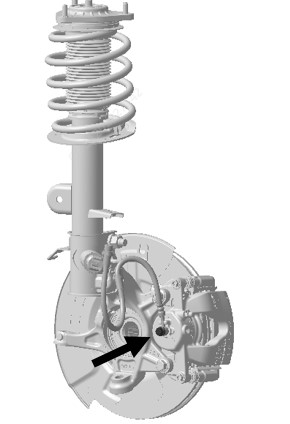
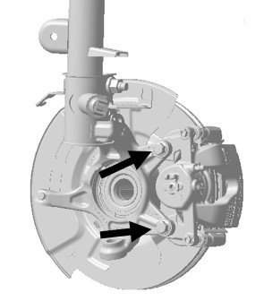

Снятие
Выключение автомобиля
1. Выполнить Подъем автомобиля. Ссылка: Подъем
2. Снять переднее колесо. Ссылка: Колеса и шины
3. Использовать торцевую головку на 13# для Снятие переднего тормозного шланга. Крутящий момент: 30 ± 2 N.m.

4. Снять узел переднего суппорта, используя шестигранную торцевую головку на 18#, отвернуть болты кронштейна суппорта, момент затяжки: 120 ± 10 N.m. Как показано на рисунке ниже

Установка выполняется в порядке, обратном снятию.
После замены суппорта необходимо выполнить удаление воздуха. Ссылка: Удаление воздуха из тормозной системы